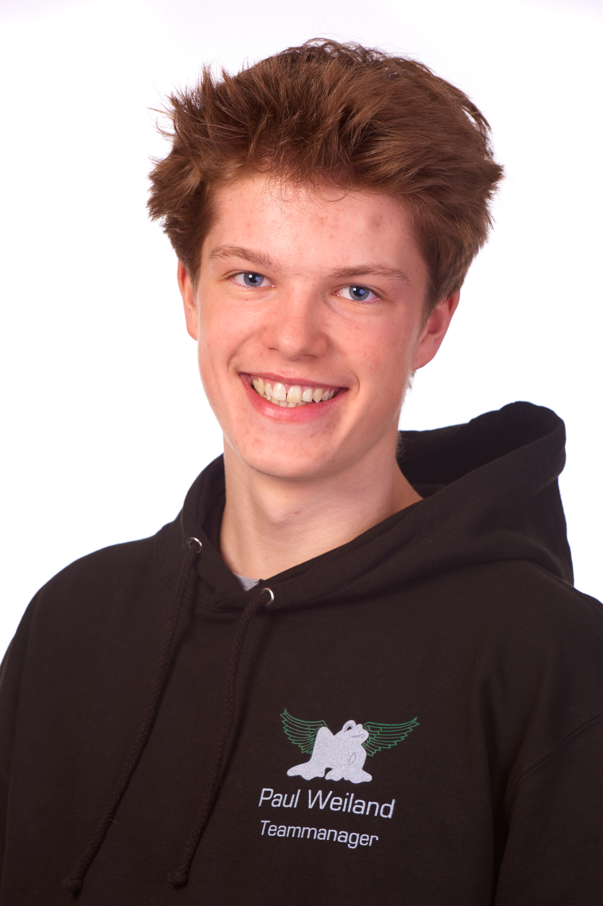

|  | Das Ist Philipp, unser Teamchef und Designer. er ist 14 Jahre alt, geht in die neunte Klasse und istSchüler des Gymnasium Grootmoors. Als Teamchef ist es seine Aufgabe das Team zu koordinieren und dafür zu sorgen, das jeder seine Aufgabe richtig macht. Alt Desinger des Teams sorgt Philipp immer für coole Logos und ein Stimmiges gesamt Bild. |
Peer geht auch 14 jahre alt und geht auch in die neunte Klasse des Gymnasium Grootmoors. Peer ist einer von zwei Konstrukteuren. Die Konstrukteure konstruieren den Rennwagen des Teams. |
|
Liam ist 15 Jahre alt und besucht die zehnte Klasse des Gymnasium Grootmoors. Liam ist der zweite Konstrukteur des Teams und muss, genau wie Peer, sich um das Konstruieren des Wagens kümmern. |
|
Das ist Finn, er ist 14 Jahre alt, in der neunten Klasse und ebenfalls auf dem Gymnasium Grootmoor. Finn kümmert sich um die Vermaktung des Teams und um den IT-bereich des Teams. Er kümmert sich um die Instagram-Page und um die Webseite des Teams. Durch Finn können wir nsere Sponsoren und Fans auf dem neusten Stand halten. |
|
Um die Finanzen kümmert sich Nuno. Nuno ist ebenfalls auf dem Gymnasium Grootmoor, in der neunten Klasse und 14 Jahre alt. Nuno kümmert sich darum, dass wir genug sponsoren haben, damit wir unsere Ziele auch umsetzen können. |
|
Lenas ist 14 Jahre alt geht in die neunte Klassse und ist auf dem Gymnasium Grootmoor. Lenas ist der Finanz-Manager, was bedetet, dass er die Finanzen einplanen muss. Er entscheidet, was wir als nächstes brauchen, zudem hat er den Überblick, wie viele Ressourcen wir haben. |